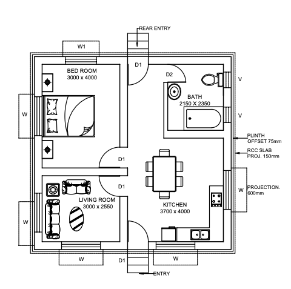

Trying My Very Hardest to Build My Own Mini Residential Project and Make a Webpage For It
Introduction
As I have far too much time on my hands, I have decided to create my own full mini residential home project, compiling the whole project on my own HTML5/CSS live server, coded from scratch. This project will take into consideration all technical elements (assuming I haven't missed any) that would come with a real-life project as a Structural Engineer - minus client consultation.
My aim with this project is to:
gain a deeper understanding of residential structural engineering and its whole process.
Improve my design software skills explore apps such as AutoCAD, aswell as improve my knowledge and efficiency.
learn some fundamental programming by documenting all of my progress on this site.
To see if I like it!
The project will be based around the construction of a residential bungalow. For the project, I will be simulating the role of a Structural Engineer; therefore I'll be taking care of the roof, wall and foundation calculations to ensure the bungalow is structurally sound and can comply with the local building standards.
Disclaimers: geotechnical reports are imagined to be outsourced and typical values are assumed for this project to make life a little simpler.
As this was a beginner project, I opted to oversimplify the design parameters so I could get a broad taste of everything. I am aware this is an unrealistic design and there is often an awful lot more that goes into residential house design. I am also aware that I have missed a few structural considerations in the form of live loads such as furniture, aswell as other house features such as the windows and above lintels, the floor, and moisture management. Often, a lot of the strength and stability values were well within local code values anyway, and no calculation was necessary.
Site Selection
Location: The site is located in Falkirk, where the climate comes under 'temperate maritime'
Soil type: It will be built on till soil, meaning the soil will be compact, with poor drainage, and comprised mainly of stones, clay, silt, sand and gravel.
Topography: Perfection. God has reached his hand on earth and carved out an inch perfect excavation for a concrete strip
Local Standards: I went with the most relevant local standards I could find (whatever google threw at me)
Load Assessment - BS EN 1991
Structural Design - BS EN 1992-1996
Ground Conditions - Not my problem
Everything Else - chatgpt
Design Considerations
Architecture
The bungalow was intstructed to be 7450 x 7600 mm in size with a hip roof that would offset 500mm over the eaves. Before I carried out the 3D modelling of the house and the structural calculations, I drew the floor plan shown below as a basis to follow. From there, I modelled the house in 3D:

Structural Calculations and Analysis
This was my first time carrying out load calculatons outside of structural mechanics and mathematics in College, so I just winged it as best as I could.
Roof Calcs: I started off with the roof. I knew was to be a hip roof with a bogstandard 500mm overhang. To mimic the scenario of maintaining as traditional a build as possible, I opted to design for a welsh slate roof supported by rafters and ridge board at a typical 30° slope as opposed to the more modern method that uses trusses. With all design limitations established it was time to carry out my calcs:
I started off figuring out the correct rise with respect to the 30° slope, then I calculated the hip run from the effective span, then the ridge length which would be 1000mm. I then carried out my load calculations which would determine my final choice of rafter size at 4.88mm. Then, all that was left to do was find the maximum bending moment, the maximum shear force, and the moment of inertia, to ensure they met minimum safety requirements found in BS EN 1990
Wall Calcs:Then, working my way down, I moved onto the wall calcs. These were to be 300mm thick solid brick walls with a lime-based harling finish. The cavity wall was to be made from concrete blocks and plasterboard to house mineral wool insulation.
After learning quickly from my roof calcs, I realised things could get messy quickly, so I made an organized list of what to carry out chronoligcally. You can see the list in the folder above. In summary, I started with finding dead loads, then live loads, then wind loads and snow loads to find ultimately the total load per load bearing wall. Then came various other calcs and checks using terms and symbols I had never used before, such as ùúé for finding compressive strength and Œª for the slenderness ratio.
Foundation Calcs: Finally, it was time to carry out the calculations for the foundations. At this point there wasn't too many new things I had to do or new parameters I had to work with. I just had to make sure the foundations could bare the loads and meet the local building standards. Once I rounded off the factor of safety and settlement analysis, I as a "structural engineer" could down tools (or calculator in this case).
Problem Solving
What's important as engineers is that we are assessed based on our ability to think critically and overcome problems as opposed to being assessed purely on the size and glamour of our projects. I have included this section to go over some of the problems I encountered whilst carrying out this project. Due to the simplicity of the project, these problems were by no means mega, but are still worth noting in my opinion.
Drawing/ Modelling redesign
I never actually intended to design for a rectangular based house in the first place. I had followed a tutorial for an indian residential home, which I carried out completely (as I didn't know enough 3D modelling skills to design my own at this point) and ended up reverting to a more simplistic model that I could complete easier. The original floor plan can be seen below
I found it valuable to learn some reverse engineering here. Although it looked fairly simple to carry out some simple touch ups, and honestly it wasn't that hard, as someone with minimal CAD experience I was forced to think on the spot and improvise.
Calculation errors
As a first-timer, naturally, I ran into some miscalculations. Most notable of which were in the roof calcs. A few negative numbers later I was able to back track and figure everything out before moving on. All in all I felt the whole project improved my foundational maths and physics skills, most notably strengthening my understanding between weight/mass parameters and how they relate and convert to eachother.
Conclusion
This project was super insightful for me to get a better understanding of the whole spectrum of engineering. It was super educational and more importantly was an enjoyable experience! I made the full live server using VScode and wrote in languages HTML5/CSS which was thoroughly enjoyable. Below I have attached screenshots of all the code I wrote to make the website.